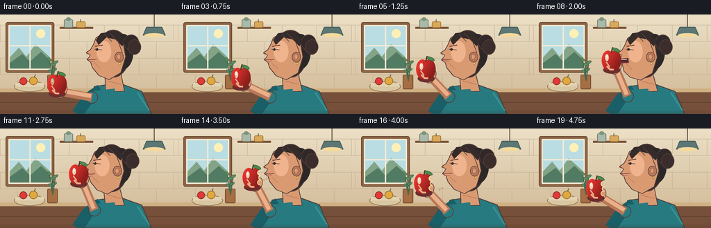
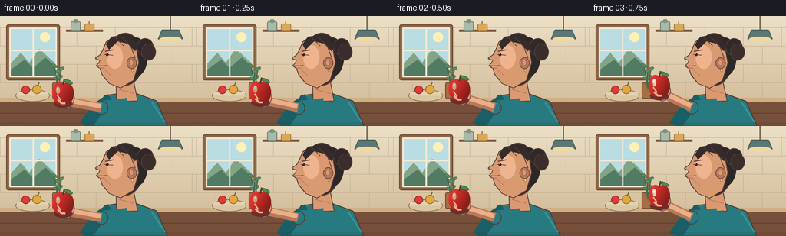
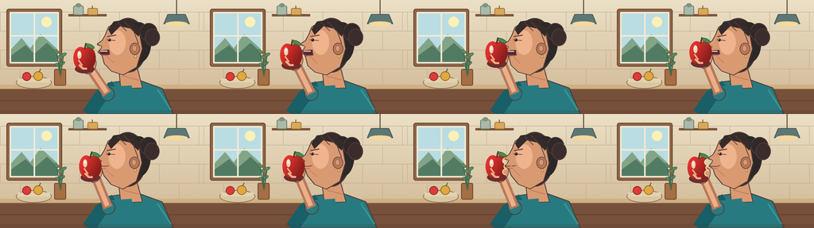

CODING AGENTS AS PIXEL WORLD MODELS
traex/GPT-5.6-Sol · motion_rationality_0006
点击播放 · 原生 RGB 像素
逐轮保存的候选
回放视频、检查图与代码变化。
每份候选均可单独播放。实际图片检查记录在下方工具轨迹中。
候选 01播放与检查图
点击播放 · 原生 RGB 像素


展开代码变化
--- 上一保存版本
+++ 本次保存版本
@@ -0,0 +1,239 @@
+from pathlib import Path
+import math
+import numpy as np
+from PIL import Image, ImageDraw, ImageFilter
+import artifact_io
+
+CASE_DIR = Path(__file__).resolve().parent
+W, H, N = 256, 144, 20
+S = 4
+
+def sc(v):
+ if isinstance(v, (tuple, list)):
+ return tuple(int(round(x*S)) for x in v)
+ return int(round(v*S))
+
+def smooth(x):
+ x=max(0.0,min(1.0,x)); return x*x*(3-2*x)
+
+def rgba(hexv, a=255):
+ hexv=hexv.lstrip('#')
+ return tuple(int(hexv[i:i+2],16) for i in (0,2,4))+(a,)
+
+def draw_ellipse(d, box, fill, outline=None, width=1):
+ d.ellipse(sc(box), fill=fill, outline=outline, width=sc(width) if outline else 1)
+
+def draw_line(d, points, fill, width, joint='curve'):
+ d.line([sc(p) for p in points], fill=fill, width=sc(width), joint=joint)
+
+def draw_poly(d, points, fill, outline=None, width=1):
+ d.polygon([sc(p) for p in points], fill=fill)
+ if outline: d.line([sc(p) for p in points+[points[0]]], fill=outline, width=sc(width), joint='curve')
+
+def rr(d, box, radius, fill, outline=None, width=1):
+ d.rounded_rectangle(sc(box), radius=sc(radius), fill=fill, outline=outline, width=sc(width))
+
+def rotated_ellipse(base, center, size, angle, fill, outline=None, width=1):
+ pad=8
+ iw,ih=int((size[0]+pad)*S),int((size[1]+pad)*S)
+ lay=Image.new('RGBA',(iw,ih),(0,0,0,0)); ld=ImageDraw.Draw(lay)
+ ld.ellipse((sc(pad/2),sc(pad/2),sc(pad/2+size[0]),sc(pad/2+size[1])),fill=fill,outline=outline,width=sc(width))
+ lay=lay.rotate(angle,resample=Image.Resampling.BICUBIC,expand=True)
+ base.alpha_composite(lay,(int(center[0]*S-lay.width/2),int(center[1]*S-lay.height/2)))
+
+def make_background():
+ # Soft warm wall gradient with subtle paper-like grain.
+ yy=np.linspace(0,1,H*S)[:,None,None]
+ top=np.array([236,224,198],dtype=float)[None,None,:]
+ bot=np.array([206,181,145],dtype=float)[None,None,:]
+ arr=np.tile(top*(1-yy)+bot*yy,(1,W*S,1))
+ rng=np.random.default_rng(7)
+ arr += rng.normal(0,0.8,arr.shape[:2])[:,:,None]
+ im=Image.fromarray(np.uint8(np.clip(arr,0,255)),'RGB').convert('RGBA')
+ d=ImageDraw.Draw(im)
+ # tiled backsplash
+ for y in [15,39,63,87,110]: draw_line(d,[(0,y),(256,y)],rgba('bba98d',80),0.55)
+ for row,y in enumerate([15,39,63,87]):
+ off=0 if row%2==0 else 25
+ for x in range(off,257,50): draw_line(d,[(x,y),(x,y+24)],rgba('bba98d',55),0.5)
+ # window and warm wood frame
+ rr(d,(8,11,78,84),3,rgba('8d6546'),rgba('67452e'),1)
+ rr(d,(12,15,74,80),1,rgba('bfe2e5'),rgba('f3ead5'),2)
+ # sky gradient substitute and landscape
+ d.rectangle(sc((14,17,72,78)),fill=rgba('b9dde2'))
+ draw_ellipse(d,(52,21,65,34),rgba('fff0b7',215))
+ draw_poly(d,[(14,62),(27,48),(38,61),(51,43),(72,62),(72,78),(14,78)],rgba('83a486'))
+ draw_poly(d,[(14,70),(32,57),(43,68),(59,54),(72,66),(72,78),(14,78)],rgba('527b63'))
+ draw_line(d,[(43,16),(43,79)],rgba('f3ead5'),2)
+ draw_line(d,[(13,45),(73,45)],rgba('f3ead5'),2)
+ # shelf and crockery
+ draw_line(d,[(86,19),(134,19)],rgba('7c5438'),3)
+ rr(d,(92,7,105,19),2,rgba('aab9a8'),rgba('6c7e70'),1)
+ draw_ellipse(d,(95,4,102,9),rgba('7c957f'))
+ rr(d,(110,10,123,19),2,rgba('d9a85a'),rgba('a77935'),1)
+ draw_line(d,[(116,7),(116,11)],rgba('7a6b4d'),1.2)
+ # hanging pendant at right
+ draw_line(d,[(222,0),(222,18)],rgba('5a4d43'),1.2)
+ draw_poly(d,[(211,18),(233,18),(238,30),(206,30)],rgba('5d7775'),rgba('405a58'),1)
+ draw_ellipse(d,(208,27,236,33),rgba('f3d99d',170))
+ # counter and front
+ d.rectangle(sc((0,107,256,144)),fill=rgba('8c6246'))
+ d.rectangle(sc((0,107,256,112)),fill=rgba('cfb083'))
+ d.rectangle(sc((0,113,256,144)),fill=rgba('76503a'))
+ draw_line(d,[(0,127),(256,127)],rgba('61402f'),1)
+ # bowl / kitchen context left
+ draw_ellipse(d,(20,96,65,112),rgba('d9c7a2'),rgba('8e7455'),1)
+ d.rectangle(sc((22,99,63,104)),fill=rgba('e2d2b0'))
+ draw_ellipse(d,(28,91,39,102),rgba('df3b37'),rgba('8f2928'),1)
+ draw_ellipse(d,(42,90,54,102),rgba('e0a83f'),rgba('9c6d24'),1)
+ draw_line(d,[(49,91),(51,87)],rgba('5b633a'),1.2)
+ # plant in window foreground
+ rr(d,(68,87,83,108),2,rgba('a56e43'),rgba('70472e'),1)
+ for x,y,a in [(73,82,-28),(78,80,28),(75,72,-15),(80,69,25),(71,65,-30)]:
+ draw_line(d,[(76,96),(x,y)],rgba('45694d'),1.2)
+ rotated_ellipse(im,(x,y),(8,4),a,rgba('5f8d61'),rgba('416a4c'),0.7)
+ return im
+
+BG=make_background()
+
+def apple_layer(cx,cy,bitten=False):
+ # Transparent illustrated apple with gradient-like highlights and a true scalloped bite.
+ size=44*S
+ layer=Image.new('RGBA',(size,size),(0,0,0,0))
+ mask=Image.new('L',(size,size),0); md=ImageDraw.Draw(mask)
+ ox=22*S; oy=23*S
+ md.ellipse((sc(8),sc(8),sc(26),sc(36)),fill=255)
+ md.ellipse((sc(18),sc(8),sc(36),sc(36)),fill=255)
+ md.ellipse((sc(9),sc(12),sc(35),sc(37)),fill=255)
+ if bitten:
+ # Three overlapping semicircular tooth notches on the mouth-facing (right) edge.
+ for bx,by,r in [(34,15,4.5),(36,22,5.0),(34,29,4.5)]:
+ md.ellipse((sc(bx-r),sc(by-r),sc(bx+r),sc(by+r)),fill=0)
+ pix=np.zeros((size,size,4),dtype=np.uint8)
+ yy,xx=np.mgrid[0:size,0:size]
+ x=xx/S; y=yy/S
+ shade=np.clip(1.08-0.016*(x-14)-0.009*(y-12),.66,1.08)
+ pix[...,0]=np.clip(212*shade,0,255)
+ pix[...,1]=np.clip(47*shade,0,255)
+ pix[...,2]=np.clip(43*shade,0,255)
+ pix[...,3]=np.array(mask)
+ app=Image.fromarray(pix,'RGBA')
+ ad=ImageDraw.Draw(app)
+ # blush and highlight clipped approximately within apple
+ ad.ellipse(sc((13,13,18,23)),fill=rgba('ffd9bd',115))
+ ad.ellipse(sc((14,14,16.5,18.5)),fill=rgba('ffffff',155))
+ # Cream-colored torn flesh rims emphasize that the missing portion is a bite.
+ if bitten:
+ for bx,by,r in [(33.0,15,3.9),(35.0,22,4.3),(33.0,29,3.9)]:
+ ad.arc(sc((bx-r,by-r,bx+r,by+r)),95,265,fill=rgba('f7d99c'),width=sc(1.25))
+ # stem and leaf
+ draw_line(ad,[(22,11),(24,3)],rgba('573a27'),2)
+ rotated_ellipse(app,(29,7),(12,5),-24,rgba('4f8a4e'),rgba('315d36'),0.8)
+ return layer,app,(int((cx-22)*S),int((cy-23)*S))
+
+def render_frame(i):
+ t=i/(N-1)
+ im=BG.copy()
+ d=ImageDraw.Draw(im)
+ # Movement is staged into approach, contact/compression, and pull-away.
+ if t < .45:
+ p=smooth(t/.45); ax=82+(113-82)*p; ay=102+(67-102)*p
+ elif t < .61:
+ q=(t-.45)/.16; ax=113+0.6*math.sin(q*math.pi); ay=67+0.4*math.sin(q*math.pi)
+ else:
+ p=smooth((t-.61)/.39); ax=113+(90-113)*p; ay=67+(88-67)*p
+ contact=smooth(min(1,t/.48))*(1-smooth(max(0,(t-.58)/.22)))
+ head_dx=-2.6*contact
+ head_dy=0.7*contact
+ # Subtle breathing keeps the figure alive without camera instability.
+ breathe=0.7*math.sin(2*math.pi*t)
+ skin=rgba('d99a72'); skin_light=rgba('eab089'); skin_shadow=rgba('b97859')
+ outline=rgba('513c38')
+ # torso and far shoulder
+ draw_poly(d,[(136,104+breathe),(171,99+breathe),(204,111+breathe),(218,144),(117,144)],rgba('277b80'),outline,1.2)
+ draw_line(d,[(145,109+breathe),(126,122),(111,144)],rgba('195f67'),17)
+ draw_line(d,[(198,113),(215,139)],rgba('3b9392'),2)
+ # neck (behind head)
+ draw_poly(d,[(151+head_dx,83),(173+head_dx,80),(179,111),(152,112)],skin,outline,1)
+ draw_line(d,[(155,96),(174,101)],skin_shadow,1.1)
+ # articulated near arm: upper sleeve to elbow, then bare forearm toward the apple
+ wrist=(ax+6,ay+10)
+ ex=132 + 4*contact; ey=120-2*contact
+ draw_line(d,[(166,116+breathe),(ex,ey)],rgba('277b80'),18)
+ draw_ellipse(d,(ex-9,ey-9,ex+9,ey+9),rgba('277b80'),outline,1)
+ draw_line(d,[(ex,ey),wrist],skin_shadow,12)
+ draw_line(d,[(ex-1,ey-2),(wrist[0]-1,wrist[1]-2)],skin_light,6)
+ draw_ellipse(d,(wrist[0]-6,wrist[1]-6,wrist[0]+7,wrist[1]+7),skin,outline,0.8)
+ # hair mass behind face
+ draw_ellipse(d,(139+head_dx,22+head_dy,187+head_dx,91+head_dy),rgba('352c2a'),outline,1.2)
+ draw_ellipse(d,(162+head_dx,28,192+head_dx,79),rgba('2d2828'))
+ # ponytail / bun
+ draw_ellipse(d,(178+head_dx,29,200+head_dx,52),rgba('302829'),outline,1)
+ draw_ellipse(d,(184+head_dx,36,203+head_dx,58),rgba('3b2d2b'),outline,1)
+ # face profile facing left: forehead, nose, lips, chin
+ jaw_drop=0
+ if .27<t<.50: jaw_drop=5*math.sin(math.pi*(t-.27)/.23)
+ face=[(164+head_dx,27+head_dy),(148+head_dx,27+head_dy),(138+head_dx,34+head_dy),
+ (134+head_dx,44+head_dy),(130+head_dx,51+head_dy),(124+head_dx,55+head_dy),
+ (130+head_dx,58+head_dy),(128+head_dx,62+head_dy),(125+head_dx,65+head_dy),
+ (130+head_dx,68+head_dy+jaw_drop*.35),(133+head_dx,77+head_dy+jaw_drop),
+ (142+head_dx,88+head_dy+jaw_drop*.45),(157+head_dx,94+head_dy),(174+head_dx,84+head_dy),
+ (181+head_dx,61+head_dy),(177+head_dx,39+head_dy)]
+ draw_poly(d,face,skin,outline,1.1)
+ # temple light and cheek shadow
+ draw_ellipse(d,(139+head_dx,38,160+head_dx,69),rgba('efb48d',85))
+ draw_line(d,[(136+head_dx,70+head_dy),(145+head_dx,78+head_dy+jaw_drop*.35)],rgba('be7e61',130),1)
+ # ear and earring
+ draw_ellipse(d,(165+head_dx,54,178+head_dx,69),skin_shadow,outline,0.8)
+ draw_ellipse(d,(168+head_dx,57,174+head_dx,65),skin,rgba('995f4e'),0.7)
+ draw_ellipse(d,(171+head_dx,69,174+head_dx,73),rgba('e9c66b'),rgba('8f6b2f'),0.5)
+ # hair cap and a few strands
+ draw_poly(d,[(138+head_dx,37),(145+head_dx,27),(165+head_dx,24),(180+head_dx,38),(176+head_dx,46),(166+head_dx,36),(153+head_dx,33),(142+head_dx,44)],rgba('352b2a'))
+ draw_line(d,[(158+head_dx,27),(170+head_dx,39),(176+head_dx,55)],rgba('58403a'),1)
+ draw_line(d,[(150+head_dx,28),(161+head_dx,39)],rgba('58403a'),.8)
+ # eyebrow, eye follows apple
+ draw_line(d,[(137+head_dx,46),(148+head_dx,44)],rgba('674037'),1.5)
+ draw_line(d,[(136+head_dx,50),(147+head_dx,51)],rgba('5a3d38'),1)
+ pupil_x=139+head_dx-1.2
+ draw_ellipse(d,(pupil_x,48.6,pupil_x+3.4,52.2),rgba('2d2927'))
+ draw_ellipse(d,(pupil_x+.6,49,pupil_x+1.3,49.8),rgba('ffffff'))
+ # nose underside
+ draw_line(d,[(124+head_dx,56+head_dy),(130+head_dx,58+head_dy)],rgba('9e624e'),.9)
+ # mouth: a clearly opening dark cavity before contact, then closed bite/chew line.
+ if jaw_drop>0.8:
+ draw_poly(d,[(126+head_dx,63+head_dy),(139+head_dx,62+head_dy),(140+head_dx,67+head_dy+jaw_drop*.45),(130+head_dx,69+head_dy+jaw_drop*.35)],rgba('542d2e'),rgba('7e4547'),.6)
+ draw_line(d,[(128+head_dx,64+head_dy),(137+head_dx,64+head_dy)],rgba('f1d9c5'),1.15)
+ draw_line(d,[(129+head_dx,68+head_dy+jaw_drop*.3),(138+head_dx,68+head_dy+jaw_drop*.35)],rgba('bd5d60'),1.3)
+ else:
+ chew=0.8*math.sin((t-.63)*8*math.pi) if t>.63 else 0
+ draw_line(d,[(126+head_dx,65+head_dy),(134+head_dx,65.2+head_dy+chew),(139+head_dx,64.5+head_dy)],rgba('88464b'),1.3)
+ draw_line(d,[(128+head_dx,68+head_dy),(136+head_dx,68+head_dy)],rgba('b76566'),.8)
+ # Hand fingers wrap visibly around the fruit, drawn before fruit for correct occlusion.
+ rotated_ellipse(im,(ax+7,ay+9),(14,22),-28,skin,outline,.8)
+ draw_line(ImageDraw.Draw(im),[(ax+2,ay+8),(ax-7,ay+1)],skin_light,3.3)
+ draw_line(ImageDraw.Draw(im),[(ax+3,ay+11),(ax-7,ay+7)],skin,3.1)
+ # apple shadow on hand
+ draw_ellipse(ImageDraw.Draw(im),(ax-12,ay+7,ax+12,ay+18),rgba('6c2d2d',70))
+ # Whole through bite contact; scalloped missing chunk appears as it pulls away.
+ bitten = i >= 12
+ _,app,pos=apple_layer(ax,ay,bitten)
+ im.alpha_composite(app,pos)
+ d=ImageDraw.Draw(im)
+ # fingertips in front create a convincing grip
+ draw_line(d,[(ax-7,ay+7),(ax-2,ay+12),(ax+3,ay+12)],skin_light,2.4)
+ draw_line(d,[(ax-8,ay+1),(ax-3,ay+8)],skin_light,2.0)
+ # Tiny crumbs briefly travel naturally downward after the bite.
+ if 12 <= i <= 16:
+ k=i-12
+ for j,(dx,dy) in enumerate([(0,0),(4,-2)]):
+ cx=127+dx-1.5*k; cy=67+dy+2.1*k+0.8*k*k
+ draw_ellipse(d,(cx-1,cy-1,cx+1,cy+1),rgba('f2cf89'),rgba('9c7140'),.4)
+ # soft foreground edge/shadow anchors composition
+ overlay=Image.new('RGBA',im.size,(0,0,0,0)); od=ImageDraw.Draw(overlay)
+ od.rectangle(sc((0,139,256,144)),fill=rgba('3a2825',30))
+ im=Image.alpha_composite(im,overlay)
+ return np.array(im.convert('RGB').resize((W,H),Image.Resampling.LANCZOS),dtype=np.uint8)
+
+frames=np.stack([render_frame(i) for i in range(N)],axis=0)
+artifact_io.save(frames,CASE_DIR)
+print('saved',frames.shape,frames.dtype)
可观测工具轨迹
实际执行的命令与返回图片。
命令 1exit 0
/bin/bash -lc "cat prompt.txt && printf '\\n--- GENERATION_RULES.md ---\\n' && cat GENERATION_RULES.md"
命令 2exit 0
/bin/bash -lc "cat task_spec.json && printf '\\n--- FILES ---\\n' && find . -maxdepth 2 -type f -printf '%p\\n' | sort"
命令 3exit 0
/bin/bash -lc 'cat artifact_io.py'
命令 4exit 0
/bin/bash -lc "cat > generate.py <<'PY'
from pathlib import Path
import math
import numpy as np
from PIL import Image, ImageDraw, ImageFilter
import artifact_io
CASE_DIR = Path(__file__).resolve().parent
W, H, N = 256, 144, 20
S = 4
def sc(v):
if isinstance(v, (tuple, list)):
return tuple(int(round(x*S)) for x in v)
return int(round(v*S))
def smooth(x):
x=max(0.0,min(1.0,x)); return x*x*(3-2*x)
def rgba(hexv, a=255):
hexv=hexv.lstrip('#')
return tuple(int(hexv[i:i+2],16) for i in (0,2,4))+(a,)
def draw_ellipse(d, box, fill, outline=None, width=1):
d.ellipse(sc(box), fill=fill, outline=outline, width=sc(width) if outline else 1)
def draw_line(d, points, fill, width, joint='curve'):
d.line([sc(p) for p in points], fill=fill, width=sc(width), joint=joint)
def draw_poly(d, points, fill, outline=None, width=1):
d.polygon([sc(p) for p in points], fill=fill)
if outline: d.line([sc(p) for p in points+[points[0]]], fill=outline, width=sc(width), joint='curve')
def rr(d, box, radius, fill, outline=None, width=1):
d.rounded_rectangle(sc(box), radius=sc(radius), fill=fill, outline=outline, width=sc(width))
def rotated_ellipse(base, center, size, angle, fill, outline=None, width=1):
pad=8
iw,ih=int((size[0]+pad)*S),int((size[1]+pad)*S)
lay=Image.new('RGBA',(iw,ih),(0,0,0,0)); ld=ImageDraw.Draw(lay)
ld.ellipse((sc(pad/2),sc(pad/2),sc(pad/2+size[0]),sc(pad/2+size[1])),fill=fill,outline=outline,width=sc(width))
lay=lay.rotate(angle,resample=Image.Resampling.BICUBIC,expand=True)
base.alpha_composite(lay,(int(center[0]*S-lay.width/2),int(center[1]*S-lay.height/2)))
def make_background():
# Soft warm wall gradient with subtle paper-like grain.
yy=np.linspace(0,1,H*S)[:,None,None]
top=np.array([236,224,198],dtype=float)[None,None,:]
bot=np.array([206,181,145],dtype=float)[None,None,:]
arr=np.tile(top*(1-yy)+bot*yy,(1,W*S,1))
rng=np.random.default_rng(7)
arr += rng.normal(0,0.8,arr.shape[:2])[:,:,None]
im=Image.fromarray(np.uint8(np.clip(arr,0,255)),'RGB').convert('RGBA')
d=ImageDraw.Draw(im)
# tiled backsplash
for y in [15,39,63,87,110]: draw_line(d,[(0,y),(256,y)],rgba('bba98d',80),0.55)
for row,y in enumerate([15,39,63,87]):
off=0 if row%2==0 else 25
for x in range(off,257,50): draw_line(d,[(x,y),(x,y+24)],rgba('bba98d',55),0.5)
# window and warm wood frame
rr(d,(8,11,78,84),3,rgba('8d6546'),rgba('67452e'),1)
rr(d,(12,15,74,80),1,rgba('bfe2e5'),rgba('f3ead5'),2)
# sky gradient substitute and landscape
d.rectangle(sc((14,17,72,78)),fill=rgba('b9dde2'))
draw_ellipse(d,(52,21,65,34),rgba('fff0b7',215))
draw_poly(d,[(14,62),(27,48),(38,61),(51,43),(72,62),(72,78),(14,78)],rgba('83a486'))
draw_poly(d,[(14,70),(32,57),(43,68),(59,54),(72,66),(72,78),(14,78)],rgba('527b63'))
draw_line(d,[(43,16),(43,79)],rgba('f3ead5'),2)
draw_line(d,[(13,45),(73,45)],rgba('f3ead5'),2)
# shelf and crockery
draw_line(d,[(86,19),(134,19)],rgba('7c5438'),3)
rr(d,(92,7,105,19),2,rgba('aab9a8'),rgba('6c7e70'),1)
draw_ellipse(d,(95,4,102,9),rgba('7c957f'))
rr(d,(110,10,123,19),2,rgba('d9a85a'),rgba('a77935'),1)
draw_line(d,[(116,7),(116,11)],rgba('7a6b4d'),1.2)
# hanging pendant at right
draw_line(d,[(222,0),(222,18)],rgba('5a4d43'),1.2)
draw_poly(d,[(211,18),(233,18),(238,30),(206,30)],rgba('5d7775'),rgba('405a58'),1)
draw_ellipse(d,(208,27,236,33),rgba('f3d99d',170))
# counter and front
d.rectangle(sc((0,107,256,144)),fill=rgba('8c6246'))
d.rectangle(sc((0,107,256,112)),fill=rgba('cfb083'))
d.rectangle(sc((0,113,256,144)),fill=rgba('76503a'))
draw_line(d,[(0,127),(256,127)],rgba('61402f'),1)
# bowl / kitchen context left
draw_ellipse(d,(20,96,65,112),rgba('d9c7a2'),rgba('8e7455'),1)
d.rectangle(sc((22,99,63,104)),fill=rgba('e2d2b0'))
draw_ellipse(d,(28,91,39,102),rgba('df3b37'),rgba('8f2928'),1)
draw_ellipse(d,(42,90,54,102),rgba('e0a83f'),rgba('9c6d24'),1)
draw_line(d,[(49,91),(51,87)],rgba('5b633a'),1.2)
# plant in window foreground
rr(d,(68,87,83,108),2,rgba('a56e43'),rgba('70472e'),1)
for x,y,a in [(73,82,-28),(78,80,28),(75,72,-15),(80,69,25),(71,65,-30)]:
draw_line(d,[(76,96),(x,y)],rgba('45694d'),1.2)
rotated_ellipse(im,(x,y),(8,4),a,rgba('5f8d61'),rgba('416a4c'),0.7)
return im
BG=make_background()
def apple_layer(cx,cy,bitten=False):
# Transparent illustrated apple with gradient-like highlights and a true scalloped bite.
size=44*S
layer=Image.new('RGBA',(size,size),(0,0,0,0))
mask=Image.new('L',(size,size),0); md=ImageDraw.Draw(mask)
ox=22*S; oy=23*S
md.ellipse((sc(8),sc(8),sc(26),sc(36)),fill=255)
md.ellipse((sc(18),sc(8),sc(36),sc(36)),fill=255)
md.ellipse((sc(9),sc(12),sc(35),sc(37)),fill=255)
if bitten:
# Three overlapping semicircular tooth notches on the mouth-facing (right) edge.
for bx,by,r in [(34,15,4.5),(36,22,5.0),(34,29,4.5)]:
md.ellipse((sc(bx-r),sc(by-r),sc(bx+r),sc(by+r)),fill=0)
pix=np.zeros((size,size,4),dtype=np.uint8)
yy,xx=np.mgrid[0:size,0:size]
x=xx/S; y=yy/S
shade=np.clip(1.08-0.016*(x-14)-0.009*(y-12),.66,1.08)
pix[...,0]=np.clip(212*shade,0,255)
pix[...,1]=np.clip(47*shade,0,255)
pix[...,2]=np.clip(43*shade,0,255)
pix[...,3]=np.array(mask)
app=Image.fromarray(pix,'RGBA')
ad=ImageDraw.Draw(app)
# blush and highlight clipped approximately within apple
ad.ellipse(sc((13,13,18,23)),fill=rgba('ffd9bd',115))
ad.ellipse(sc((14,14,16.5,18.5)),fill=rgba('ffffff',155))
# Cream-colored torn flesh rims emphasize that the missing portion is a bite.
if bitten:
for bx,by,r in [(33.0,15,3.9),(35.0,22,4.3),(33.0,29,3.9)]:
ad.arc(sc((bx-r,by-r,bx+r,by+r)),95,265,fill=rgba('f7d99c'),width=sc(1.25))
# stem and leaf
draw_line(ad,[(22,11),(24,3)],rgba('573a27'),2)
rotated_ellipse(app,(29,7),(12,5),-24,rgba('4f8a4e'),rgba('315d36'),0.8)
return layer,app,(int((cx-22)*S),int((cy-23)*S))
def render_frame(i):
t=i/(N-1)
im=BG.copy()
d=ImageDraw.Draw(im)
# Movement is staged into approach, contact/compression, and pull-away.
if t < .45:
p=smooth(t/.45); ax=82+(113-82)*p; ay=102+(67-102)*p
elif t < .61:
q=(t-.45)/.16; ax=113+0.6*math.sin(q*math.pi); ay=67+0.4*math.sin(q*math.pi)
else:
p=smooth((t-.61)/.39); ax=113+(90-113)*p; ay=67+(88-67)*p
contact=smooth(min(1,t/.48))*(1-smooth(max(0,(t-.58)/.22)))
head_dx=-2.6*contact
head_dy=0.7*contact
# Subtle breathing keeps the figure alive without camera instability.
breathe=0.7*math.sin(2*math.pi*t)
skin=rgba('d99a72'); skin_light=rgba('eab089'); skin_shadow=rgba('b97859')
outline=rgba('513c38')
# torso and far shoulder
draw_poly(d,[(136,104+breathe),(171,99+breathe),(204,111+breathe),(218,144),(117,144)],rgba('277b80'),outline,1.2)
draw_line(d,[(145,109+breathe),(126,122),(111,144)],rgba('195f67'),17)
draw_line(d,[(198,113),(215,139)],rgba('3b9392'),2)
# neck (behind head)
draw_poly(d,[(151+head_dx,83),(173+head_dx,80),(179,111),(152,112)],skin,outline,1)
draw_line(d,[(155,96),(174,101)],skin_shadow,1.1)
# articulated near arm: upper sleeve to elbow, then bare forearm toward the apple
wrist=(ax+6,ay+10)
ex=132 + 4*contact; ey=120-2*contact
draw_line(d,[(166,116+breathe),(ex,ey)],rgba('277b80'),18)
draw_ellipse(d,(ex-9,ey-9,ex+9,ey+9),rgba('277b80'),outline,1)
draw_line(d,[(ex,ey),wrist],skin_shadow,12)
draw_line(d,[(ex-1,ey-2),(wrist[0]-1,wrist[1]-2)],skin_light,6)
draw_ellipse(d,(wrist[0]-6,wrist[1]-6,wrist[0]+7,wrist[1]+7),skin,outline,0.8)
# hair mass behind face
draw_ellipse(d,(139+head_dx,22+head_dy,187+head_dx,91+head_dy),rgba('352c2a'),outline,1.2)
draw_ellipse(d,(162+head_dx,28,192+head_dx,79),rgba('2d2828'))
# ponytail / bun
draw_ellipse(d,(178+head_dx,29,200+head_dx,52),rgba('302829'),outline,1)
draw_ellipse(d,(184+head_dx,36,203+head_dx,58),rgba('3b2d2b'),outline,1)
# face profile facing left: forehead, nose, lips, chin
jaw_drop=0
if .27<t<.50: jaw_drop=5*math.sin(math.pi*(t-.27)/.23)
face=[(164+head_dx,27+head_dy),(148+head_dx,27+head_dy),(138+head_dx,34+head_dy),
(134+head_dx,44+head_dy),(130+head_dx,51+head_dy),(124+head_dx,55+head_dy),
(130+head_dx,58+head_dy),(128+head_dx,62+head_dy),(125+head_dx,65+head_dy),
(130+head_dx,68+head_dy+jaw_drop*.35),(133+head_dx,77+head_dy+jaw_drop),
(142+head_dx,88+head_dy+jaw_drop*.45),(157+head_dx,94+head_dy),(174+head_dx,84+head_dy),
(181+head_dx,61+head_dy),(177+head_dx,39+head_dy)]
draw_poly(d,face,skin,outline,1.1)
# temple light and cheek shadow
draw_ellipse(d,(139+head_dx,38,160+head_dx,69),rgba('efb48d',85))
draw_line(d,[(136+head_dx,70+head_dy),(145+head_dx,78+head_dy+jaw_drop*.35)],rgba('be7e61',130),1)
# ear and earring
draw_ellipse(d,(165+head_dx,54,178+head_dx,69),skin_shadow,outline,0.8)
draw_ellipse(d,(168+head_dx,57,174+head_dx,65),skin,rgba('995f4e'),0.7)
draw_ellipse(d,(171+head_dx,69,174+head_dx,73),rgba('e9c66b'),rgba('8f6b2f'),0.5)
# hair cap and a few strands
draw_poly(d,[(138+head_dx,37),(145+head_dx,27),(165+head_dx,24),(180+head_dx,38),(176+head_dx,46),(166+head_dx,36),(153+head_dx,33),(142+head_dx,44)],rgba('352b2a'))
draw_line(d,[(158+head_dx,27),(170+head_dx,39),(176+head_dx,55)],rgba('58403a'),1)
draw_line(d,[(150+head_dx,28),(161+head_dx,39)],rgba('58403a'),.8)
# eyebrow, eye follows apple
draw_line(d,[(137+head_dx,46),(148+head_dx,44)],rgba('674037'),1.5)
draw_line(d,[(136+head_dx,50),(147+head_dx,51)],rgba('5a3d38'),1)
pupil_x=139+head_dx-1.2
draw_ellipse(d,(pupil_x,48.6,pupil_x+3.4,52.2),rgba('2d2927'))
draw_ellipse(d,(pupil_x+.6,49,pupil_x+1.3,49.8),rgba('ffffff'))
# nose underside
draw_line(d,[(124+head_dx,56+head_dy),(130+head_dx,58+head_dy)],rgba('9e624e'),.9)
# mouth: a clearly opening dark cavity before contact, then closed bite/chew line.
if jaw_drop>0.8:
draw_poly(d,[(126+head_dx,63+head_dy),(139+head_dx,62+head_dy),(140+head_dx,67+head_dy+jaw_drop*.45),(130+head_dx,69+head_dy+jaw_drop*.35)],rgba('542d2e'),rgba('7e4547'),.6)
draw_line(d,[(128+head_dx,64+head_dy),(137+head_dx,64+head_dy)],rgba('f1d9c5'),1.15)
draw_line(d,[(129+head_dx,68+head_dy+jaw_drop*.3),(138+head_dx,68+head_dy+jaw_drop*.35)],rgba('bd5d60'),1.3)
else:
chew=0.8*math.sin((t-.63)*8*math.pi) if t>.63 else 0
draw_line(d,[(126+head_dx,65+head_dy),(134+head_dx,65.2+head_dy+chew),(139+head_dx,64.5+head_dy)],rgba('88464b'),1.3)
draw_line(d,[(128+head_dx,68+head_dy),(136+head_dx,68+head_dy)],rgba('b76566'),.8)
# Hand fingers wrap visibly around the fruit, drawn before fruit for correct occlusion.
rotated_ellipse(im,(ax+7,ay+9),(14,22),-28,skin,outline,.8)
draw_line(ImageDraw.Draw(im),[(ax+2,ay+8),(ax-7,ay+1)],skin_light,3.3)
draw_line(ImageDraw.Draw(im),[(ax+3,ay+11),(ax-7,ay+7)],skin,3.1)
# apple shadow on hand
draw_ellipse(ImageDraw.Draw(im),(ax-12,ay+7,ax+12,ay+18),rgba('6c2d2d',70))
# Whole through bite contact; scalloped missing chunk appears as it pulls away.
bitten = i >= 12
_,app,pos=apple_layer(ax,ay,bitten)
im.alpha_composite(app,pos)
d=ImageDraw.Draw(im)
# fingertips in front create a convincing grip
draw_line(d,[(ax-7,ay+7),(ax-2,ay+12),(ax+3,ay+12)],skin_light,2.4)
draw_line(d,[(ax-8,ay+1),(ax-3,ay+8)],skin_light,2.0)
# Tiny crumbs briefly travel naturally downward after the bite.
if 12 <= i <= 16:
k=i-12
for j,(dx,dy) in enumerate([(0,0),(4,-2)]):
cx=127+dx-1.5*k; cy=67+dy+2.1*k+0.8*k*k
draw_ellipse(d,(cx-1,cy-1,cx+1,cy+1),rgba('f2cf89'),rgba('9c7140'),.4)
# soft foreground edge/shadow anchors composition
overlay=Image.new('RGBA',im.size,(0,0,0,0)); od=ImageDraw.Draw(overlay)
od.rectangle(sc((0,139,256,144)),fill=rgba('3a2825',30))
im=Image.alpha_composite(im,overlay)
return np.array(im.convert('RGB').resize((W,H),Image.Resampling.LANCZOS),dtype=np.uint8)
frames=np.stack([render_frame(i) for i in range(N)],axis=0)
artifact_io.save(frames,CASE_DIR)
print('saved',frames.shape,frames.dtype)
PY
python generate.py"命令 5exit 0
/bin/bash -lc 'ls -lh pixels.npz index.html inspection.png transition_check.png frames/00.png frames/19.png generate.py'
命令 6exit 0
/bin/bash -lc "python - <<'PY'
from PIL import Image,ImageDraw
from pathlib import Path
p=Path('frames'); ids=range(6,14)
out=Image.new('RGB',(256*4,144*2),(0,0,0));
for j,i in enumerate(ids): out.paste(Image.open(p/f'{i:02d}.png'),((j%4)*256,(j//4)*144))
out.save('contact_check.png')
PY
python - <<'PY'
import json, numpy as np
from PIL import Image
from pathlib import Path
s=json.loads(Path('task_spec.json').read_text())
a=np.load('pixels.npz')['pixels']
print('pixels',a.shape,a.dtype,'spec',s)
print('frames',len(list(Path('frames').glob('*.png'))))
for i in [0,8,10,11,12,13,19]:
im=np.array(Image.open(f'frames/{i:02d}.png'))
print(i,im.shape,im.dtype,round(float(im.mean()),2))
PY"视觉工具实际返回图片 1

视觉工具实际返回图片 2

保存候选 1 份；完成命令 6 次；可验证图片返回 2 张。原始 API 响应与完整日志保留在本地。